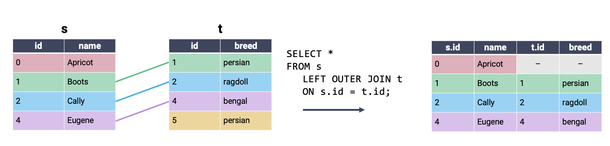

Code
# Load the SQL Alchemy Python library and DuckDB
import sqlalchemy
import duckdbIn this lecture, we’ll continue our work from last time to introduce some advanced SQL syntax.
First, let’s load in the basic_examples.db database.
# Load the SQL Alchemy Python library and DuckDB
import sqlalchemy
import duckdb# Load %%sql cell magic
%load_ext sql# Connect to the database
%sql duckdb:///data/basic_examples.db --alias basicGROUP BYAt this point, we’ve seen that SQL offers much of the same functionality that was given to us by pandas. We can extract data from a table, filter it, and reorder it to suit our needs.
In pandas, much of our analysis work relied heavily on being able to use .groupby() to aggregate across the rows of our dataset. SQL’s answer to this task is the (very conveniently named) GROUP BY clause. While the outputs of GROUP BY are similar to those of .groupby() —— in both cases, we obtain an output table where some column has been used for grouping —— the syntax and logic used to group data in SQL are fairly different to the pandas implementation.
To illustrate GROUP BY, we will consider the Dish table from our database.
%%sql
SELECT *
FROM Dish;| name | type | cost |
|---|---|---|
| ravioli | entree | 10 |
| ramen | entree | 13 |
| taco | entree | 7 |
| edamame | appetizer | 4 |
| fries | appetizer | 4 |
| potsticker | appetizer | 4 |
| ice cream | dessert | 5 |
ResultSet : to convert to pandas, call .DataFrame() or to polars, call .PolarsDataFrame()Notice that there are multiple dishes of the same type. What if we wanted to find the total costs of dishes of a certain type? To accomplish this, we would write the following code.
%%sql
SELECT type, SUM(cost)
FROM Dish
GROUP BY type;| type | sum("cost") |
|---|---|
| entree | 30 |
| dessert | 5 |
| appetizer | 12 |
ResultSet : to convert to pandas, call .DataFrame() or to polars, call .PolarsDataFrame()What is going on here? The statement GROUP BY type tells SQL to group the data based on the value contained in the type column (whether a record is an appetizer, entree, or dessert). SUM(cost) sums up the costs of dishes in each type and displays the result in the output table.
You may be wondering: why does SUM(cost) come before the command to GROUP BY type? Don’t we need to form groups before we can count the number of entries in each? Remember that SQL is a declarative programming language —— a SQL programmer simply states what end result they would like to see, and leaves the task of figuring out how to obtain this result to SQL itself. This means that SQL queries sometimes don’t follow what a reader sees as a “logical” sequence of thought. Instead, SQL requires that we follow its set order of operations when constructing queries. So long as we follow this order, SQL will handle the underlying logic.
In practical terms: our goal with this query was to output the total costs of each type. To communicate this to SQL, we say that we want to SELECT the SUMmed cost values for each type group.
There are many aggregation functions that can be used to aggregate the data contained in each group. Some common examples are:
COUNT: count the number of rows associated with each groupMIN: find the minimum value of each groupMAX: find the maximum value of each groupSUM: sum across all records in each groupAVG: find the average value of each groupWe can easily compute multiple aggregations all at once (a task that was very tricky in pandas).
%%sql
SELECT type, SUM(cost), MIN(cost), MAX(name)
FROM Dish
GROUP BY type;| type | sum("cost") | min("cost") | max("name") |
|---|---|---|---|
| appetizer | 12 | 4 | potsticker |
| entree | 30 | 7 | taco |
| dessert | 5 | 5 | ice cream |
ResultSet : to convert to pandas, call .DataFrame() or to polars, call .PolarsDataFrame()To count the number of rows associated with each group, we use the COUNT keyword. Calling COUNT(*) will compute the total number of rows in each group, including rows with null values. Its pandas equivalent is .groupby().size().
Recall the Dragon table from the previous lecture:
%%sql
SELECT * FROM Dragon;| name | year | cute |
|---|---|---|
| hiccup | 2010 | 10 |
| drogon | 2011 | -100 |
| dragon 2 | 2019 | 0 |
| puff | 2010 | 100 |
| smaug | 2011 | None |
ResultSet : to convert to pandas, call .DataFrame() or to polars, call .PolarsDataFrame()Notice that COUNT(*) and COUNT(cute) result in different outputs.
%%sql
SELECT year, COUNT(*)
FROM Dragon
GROUP BY year;| year | count_star() |
|---|---|
| 2010 | 2 |
| 2011 | 2 |
| 2019 | 1 |
ResultSet : to convert to pandas, call .DataFrame() or to polars, call .PolarsDataFrame()%%sql
SELECT year, COUNT(cute)
FROM Dragon
GROUP BY year;| year | count(cute) |
|---|---|
| 2010 | 2 |
| 2011 | 1 |
| 2019 | 1 |
ResultSet : to convert to pandas, call .DataFrame() or to polars, call .PolarsDataFrame()With this definition of GROUP BY in hand, let’s update our SQL order of operations. Remember: every SQL query must list clauses in this order.
SELECT <column expression list>
FROM <table>
[WHERE <predicate>]
[GROUP BY <column list>]
[ORDER BY <column list>]
[LIMIT <number of rows>]
[OFFSET <number of rows>];Note that we can use the AS keyword to rename columns during the selection process and that column expressions may include aggregation functions (MAX, MIN, etc.).
Now, what if we only want groups that meet a certain condition? HAVING filters groups by applying some condition across all rows in each group. We interpret it as a way to keep only the groups HAVING some condition. Note the difference between WHERE and HAVING: we use WHERE to filter rows, whereas we use HAVING to filter groups. WHERE precedes HAVING in terms of how SQL executes a query.
Let’s take a look at the Dish table to see how we can use HAVING. Say we want to group dishes with a cost greater than 4 by type and only keep groups where the max cost is less than 10.
%%sql
SELECT type, COUNT(*)
FROM Dish
WHERE cost > 4
GROUP BY type
HAVING MAX(cost) < 10;| type | count_star() |
|---|---|
| dessert | 1 |
ResultSet : to convert to pandas, call .DataFrame() or to polars, call .PolarsDataFrame()Here, we first use WHERE to filter for rows with a cost greater than 4. We then group our values by type before applying the HAVING operator. With HAVING, we can filter our groups based on if the max cost is less than 10.
With this definition of GROUP BY and HAVING in hand, let’s update our SQL order of operations. Remember: every SQL query must list clauses in this order.
SELECT <column expression list>
FROM <table>
[WHERE <predicate>]
[GROUP BY <column list>]
[ORDER BY <column list>]
[LIMIT <number of rows>]
[OFFSET <number of rows>];Note that we can use the AS keyword to rename columns during the selection process and that column expressions may include aggregation functions (MAX, MIN, etc.).
In the last lecture, we mostly worked under the assumption that our data had already been cleaned. However, as we saw in our first pass through the data science lifecycle, we’re very unlikely to be given data that is free of formatting issues. With this in mind, we’ll want to learn how to clean and transform data in SQL.
Our typical workflow when working with “big data” is:
pandas) to analyze this data in detailWe can, however, still perform simple data cleaning and re-structuring using SQL directly. To do so, we’ll use the Title table from the imdb_duck database, which contains information about movies and actors.
Let’s load in the imdb_duck database.
import os
os.environ["TQDM_DISABLE"] = "1"
if os.path.exists("/home/jovyan/shared/sql/imdb_duck.db"):
imdbpath = "duckdb:////home/jovyan/shared/sql/imdb_duck.db"
elif os.path.exists("data/imdb_duck.db"):
imdbpath = "duckdb:///data/imdb_duck.db"
else:
import gdown
url = 'https://drive.google.com/uc?id=10tKOHGLt9QoOgq5Ii-FhxpB9lDSQgl1O'
output_path = 'data/imdb_duck.db'
gdown.download(url, output_path, quiet=False)
imdbpath = "duckdb:///data/imdb_duck.db"from sqlalchemy import create_engine
imdb_engine = create_engine(imdbpath, connect_args={'read_only': True})
%sql imdb_engine --alias imdbSince we’ll be working with the Title table, let’s take a quick look at what it contains.
%%sql imdb
SELECT *
FROM Title
WHERE primaryTitle IN ('Ginny & Georgia', 'What If...?', 'Succession', 'Veep', 'Tenet')
LIMIT 10;| tconst | titleType | primaryTitle | originaTitle | isAdult | startYear | endYear | runtimeMinutes | genres |
|---|---|---|---|---|---|---|---|---|
| tt0254490 | movie | Succession | Keisho sakazuki | False | 1992 | None | 119 | Drama |
| tt4097596 | movie | What If...? | What If...? | False | None | None | 25 | Action,Drama |
| tt6723592 | movie | Tenet | Tenet | False | 2020 | None | 150 | Action,Sci-Fi,Thriller |
| tt1003027 | movie | What If...? | Notre univers impitoyable | False | 2008 | None | 87 | Comedy |
| tt8008862 | movie | Succession | Succession | False | 2018 | None | None | Horror |
| tt8819150 | movie | Succession | Succession | False | 2018 | None | 71 | Documentary |
| tt9663946 | movie | Tenet | Tenet | False | 2020 | None | 150 | Action,Sci-Fi,Thriller |
ResultSet : to convert to pandas, call .DataFrame() or to polars, call .PolarsDataFrame()LIKEOne common task we encountered in our first look at EDA was needing to match string data. For example, we might want to remove entries beginning with the same prefix as part of the data cleaning process.
In SQL, we use the LIKE operator to (you guessed it) look for strings that are like a given string pattern.
%%sql
SELECT titleType, primaryTitle
FROM Title
WHERE primaryTitle LIKE 'Star Wars: Episode I - The Phantom Menace'| titleType | primaryTitle |
|---|---|
| movie | Star Wars: Episode I - The Phantom Menace |
ResultSet : to convert to pandas, call .DataFrame() or to polars, call .PolarsDataFrame()What if we wanted to find all Star Wars movies? % is the wildcard operator, it means “look for any character, any number of times”. This makes it helpful for identifying strings that are similar to our desired pattern, even when we don’t know the full text of what we aim to extract.
%%sql
SELECT titleType, primaryTitle
FROM Title
WHERE primaryTitle LIKE '%Star Wars%'
LIMIT 10;| titleType | primaryTitle |
|---|---|
| movie | Star Wars: Episode IV - A New Hope |
| movie | Star Wars: Episode V - The Empire Strikes Back |
| movie | Star Wars: Episode VI - Return of the Jedi |
| movie | Star Wars: Episode I - The Phantom Menace |
| movie | Star Wars: Episode II - Attack of the Clones |
| movie | Star Wars: Episode III - Revenge of the Sith |
| tvMovie | The Star Wars Holiday Special |
| tvMovie | From Star Wars to Star Wars: The Story of Industrial Light & Magic |
| tvMovie | Star Wars City |
| tvMovie | From 'Star Wars' to 'Jedi': The Making of a Saga |
ResultSet : to convert to pandas, call .DataFrame() or to polars, call .PolarsDataFrame()Alternatively, we can use RegEx! DuckDB and most real DBMSs allow for this. Note that here, we have to use the SIMILAR TO operater rather than LIKE.
%%sql
SELECT titleType, primaryTitle
FROM Title
WHERE primaryTitle SIMILAR TO '.*Star Wars*.'
LIMIT 10;| titleType | primaryTitle |
|---|---|
| tvMovie | The Making of 'Star Wars' |
| movie | Doraemon: Nobita's Little Star Wars |
| movie | Saving Star Wars |
| tvMovie | The Mythology of Star Wars |
| tvMovie | Robot Chicken: Star Wars |
| tvMovie | Bring Back... Star Wars |
| movie | Battle Star Wars |
| tvMovie | Hollywood's Master of Myth: Joseph Campbell - The Force Behind Star Wars |
| tvMovie | Musk vs Bezos: The New Star Wars |
| movie | Untitled Star Wars |
ResultSet : to convert to pandas, call .DataFrame() or to polars, call .PolarsDataFrame()CASTing Data TypesA common data cleaning task is converting data to the correct variable type. The CAST keyword is used to generate a new output column. Each entry in this output column is the result of converting the data in an existing column to a new data type. For example, we may wish to convert numeric data stored as a string to an integer.
%%sql
SELECT primaryTitle, CAST(runtimeMinutes AS INT)
FROM Title;| primaryTitle | CAST(runtimeMinutes AS INTEGER) |
|---|---|
| Miss Jerry | 45 |
| The Corbett-Fitzsimmons Fight | 100 |
| Bohemios | 100 |
| The Story of the Kelly Gang | 70 |
| The Prodigal Son | 90 |
| Robbery Under Arms | None |
| Hamlet | None |
| Don Quijote | None |
| The Fairylogue and Radio-Plays | 120 |
| A Cultura do Cacau | None |
ResultSet : to convert to pandas, call .DataFrame() or to polars, call .PolarsDataFrame()We use CAST when SELECTing colunns for our output table. In the example above, we want to SELECT the columns of integer year and runtime data that is created by the CAST.
SQL will automatically name a new column according to the command used to SELECT it, which can lead to unwieldy column names. We can rename the CASTed column using the AS keyword.
%%sql
SELECT primaryTitle AS title, CAST(runtimeMinutes AS INT) AS minutes, CAST(startYear AS INT) AS year
FROM Title
LIMIT 5;| title | minutes | year |
|---|---|---|
| Miss Jerry | 45 | 1894 |
| The Corbett-Fitzsimmons Fight | 100 | 1897 |
| Bohemios | 100 | 1905 |
| The Story of the Kelly Gang | 70 | 1906 |
| The Prodigal Son | 90 | 1907 |
ResultSet : to convert to pandas, call .DataFrame() or to polars, call .PolarsDataFrame()CASEWhen working with pandas, we often ran into situations where we wanted to generate new columns using some form of conditional statement. For example, say we wanted to describe a film title as “old,” “mid-aged,” or “new,” depending on the year of its release.
In SQL, conditional operations are performed using a CASE clause. Conceptually, CASE behaves much like the CAST operation: it creates a new column that we can then SELECT to appear in the output. The syntax for a CASE clause is as follows:
CASE WHEN <condition> THEN <value>
WHEN <other condition> THEN <other value>
...
ELSE <yet another value>
ENDScanning through the skeleton code above, you can see that the logic is similar to that of an if statement in Python. The conditional statement is first opened by calling CASE. Each new condition is specified by WHEN, with THEN indicating what value should be filled if the condition is met. ELSE specifies the value that should be filled if no other conditions are met. Lastly, END indicates the end of the conditional statement; once END has been called, SQL will continue evaluating the query as usual.
Let’s see this in action. In the example below, we give the new column created by the CASE statement the name movie_age.
%%sql
/* If a movie was filmed before 1950, it is "old"
Otherwise, if a movie was filmed before 2000, it is "mid-aged"
Else, a movie is "new" */
SELECT titleType, startYear,
CASE WHEN startYear < 1950 THEN 'old'
WHEN startYear < 2000 THEN 'mid-aged'
ELSE 'new'
END AS movie_age
FROM Title;| titleType | startYear | movie_age |
|---|---|---|
| movie | 1894 | old |
| movie | 1897 | old |
| movie | 1905 | old |
| movie | 1906 | old |
| movie | 1907 | old |
| movie | 1907 | old |
| movie | 1908 | old |
| movie | 1908 | old |
| movie | 1908 | old |
| movie | 1909 | old |
ResultSet : to convert to pandas, call .DataFrame() or to polars, call .PolarsDataFrame()JOINing TablesAt this point, we’re well-versed in using SQL as a tool to clean, manipulate, and transform data in a table. Notice that this sentence referred to one table, specifically. What happens if the data we need is distributed across multiple tables? This is an important consideration when using SQL —— recall that we first introduced SQL as a language to query from databases. Databases often store data in a multidimensional structure. In other words, information is stored across several tables, with each table containing a small subset of all the data housed by the database.
A common way of organizing a database is by using a star schema. A star schema is composed of two types of tables. A fact table is the central table of the database —— it contains the information needed to link entries across several dimension tables, which contain more detailed information about the data.
Say we were working with a database about boba offerings in Berkeley. The dimension tables of the database might contain information about tea varieties and boba toppings. The fact table would be used to link this information across the various dimension tables.

If we explicitly mark the relationships between tables, we start to see the star-like structure of the star schema.

To join data across multiple tables, we’ll use the (creatively named) JOIN keyword. We’ll make things easier for now by first considering the simpler cats dataset, which consists of the tables s and t.

To perform a join, we amend the FROM clause. You can think of this as saying, “SELECT my data FROM tables that have been JOINed together.”
Remember: SQL does not consider newlines or whitespace when interpreting queries. The indentation given in the example below is to help improve readability. If you wish, you can write code that does not follow this formatting.
SELECT <column list>
FROM table_1
JOIN table_2
ON key_1 = key_2;We also need to specify what column from each table should be used to determine matching entries. By defining these keys, we provide SQL with the information it needs to pair rows of data together.
The most commonly used type of SQL JOIN is the inner join. It turns out you’re already familiar with what an inner join does, and how it works – this is the type of join we’ve been using in pandas all along! In an inner join, we combine every row in our first table with its matching entry in the second table. If a row from either table does not have a match in the other table, it is omitted from the output.

In a cross join, all possible combinations of rows appear in the output table, regardless of whether or not rows share a matching key. Because all rows are joined, even if there is no matching key, it is not necessary to specify what keys to consider in an ON statement. A cross join is also known as a cartesian product.

Conceptually, we can interpret an inner join as a cross join, followed by removing all rows that do not share a matching key. Notice that the output of the inner join above contains all rows of the cross join example that contain a single color across the entire row.
In a left outer join, all rows in the left table are kept in the output table. If a row in the right table shares a match with the left table, this row will be kept; otherwise, the rows in the right table are omitted from the output. We can fill in any missing values with NULL.

A right outer join keeps all rows in the right table. Rows in the left table are only kept if they share a match in the right table. Again, we can fill in any missing values with NULL.

In a full outer join, all rows that have a match between the two tables are joined together. If a row has no match in the second table, then the values of the columns for that second table are filled with NULL. In other words, a full outer join performs an inner join while still keeping rows that have no match in the other table. This is best understood visually:

We have kept the same output achieved using an inner join, with the addition of partially null rows for entries in s and t that had no match in the second table.
JOINsWhen joining tables, we often create aliases for table names (similarly to what we did with column names in the last lecture). We do this as it is typically easier to refer to aliases, especially when we are working with long table names. We can even reference columns using aliased table names!
Let’s say we want to determine the average rating of various movies. We’ll need to JOIN the Title and Rating tables and can create aliases for both tables.
%%sql
SELECT primaryTitle, averageRating
FROM Title AS T INNER JOIN Rating AS R
ON T.tconst = R.tconst;| primaryTitle | averageRating |
|---|---|
| The Sugarcubes: Live Zabor | 8.0 |
| Thittam Irandu | 7.099999904632568 |
| Mio's Cookbook | 6.599999904632568 |
| Ombatthane Dikku | 4.599999904632568 |
| Sevillanas de Brooklyn | 5.5 |
| Women of the Sun: A Chronology of Seeing | 8.100000381469727 |
| Bernie Blackout | 8.100000381469727 |
| Panchaali | 6.0 |
| Barbiere, IL | 7.400000095367432 |
| Collide | 6.199999809265137 |
ResultSet : to convert to pandas, call .DataFrame() or to polars, call .PolarsDataFrame()Note that the AS is actually optional! We can create aliases for our tables even without it, but we usually include it for clarity.
%%sql
SELECT primaryTitle, averageRating
FROM Title T INNER JOIN Rating R
ON T.tconst = R.tconst;| primaryTitle | averageRating |
|---|---|
| The Corbett-Fitzsimmons Fight | 5.199999809265137 |
| Bohemios | 4.199999809265137 |
| The Story of the Kelly Gang | 6.0 |
| The Prodigal Son | 5.400000095367432 |
| Robbery Under Arms | 4.300000190734863 |
| Hamlet | 2.9000000953674316 |
| Don Quijote | 4.199999809265137 |
| The Fairylogue and Radio-Plays | 5.099999904632568 |
| Faldgruben | 4.400000095367432 |
| Hamlet, Prince of Denmark | 4.699999809265137 |
ResultSet : to convert to pandas, call .DataFrame() or to polars, call .PolarsDataFrame()For more sophisticated data problems, the queries can become very complex. Common table expressions (CTEs) allow us to break down these complex queries into more manageable parts. To do so, we create temporary tables corresponding to different aspects of the problem and then reference them in the final query:
WITH
table_name1 AS (
SELECT ...
),
table_name2 AS (
SELECT ...
)
SELECT ...
FROM
table_name1,
table_name2, ...Let’s say we want to identify the top 10 action movies that are highly rated (with an average rating greater than 7) and popular (having more than 5000 votes), along with the primary actors who are the most popular. We can use CTEs to break this query down into separate problems. Initially, we can filter to find good action movies and prolific actors separately. This way, in our final join, we only need to change the order.
%%sql
WITH
good_action_movies AS (
SELECT *
FROM Title T JOIN Rating R ON T.tconst = R.tconst
WHERE genres LIKE '%Action%' AND averageRating > 7 AND numVotes > 5000
),
prolific_actors AS (
SELECT N.nconst, primaryName, COUNT(*) as numRoles
FROM Name N JOIN Principal P ON N.nconst = P.nconst
WHERE category = 'actor'
GROUP BY N.nconst, primaryName
)
SELECT primaryTitle, primaryName, numRoles, ROUND(averageRating) AS rating
FROM good_action_movies m, prolific_actors a, principal p
WHERE p.tconst = m.tconst AND p.nconst = a.nconst
ORDER BY rating DESC, numRoles DESC
LIMIT 10;| primaryTitle | primaryName | numRoles | rating |
|---|---|---|---|
| Threat Level Midnight: The Movie | Steve Carell | 51 | 10.0 |
| Threat Level Midnight: The Movie | Steve Carell | 51 | 10.0 |
| Threat Level Midnight: The Movie | Ed Helms | 36 | 10.0 |
| Threat Level Midnight: The Movie | Ed Helms | 36 | 10.0 |
| Threat Level Midnight: The Movie | Rainn Wilson | 36 | 10.0 |
| Threat Level Midnight: The Movie | John Krasinski | 28 | 10.0 |
| Threat Level Midnight: The Movie | Craig Robinson | 26 | 10.0 |
| Threat Level Midnight: The Movie | Ricky Gervais | 17 | 10.0 |
| Threat Level Midnight: The Movie | Stephen Merchant | 14 | 10.0 |
| Threat Level Midnight: The Movie | Creed Bratton | 12 | 10.0 |
ResultSet : to convert to pandas, call .DataFrame() or to polars, call .PolarsDataFrame()